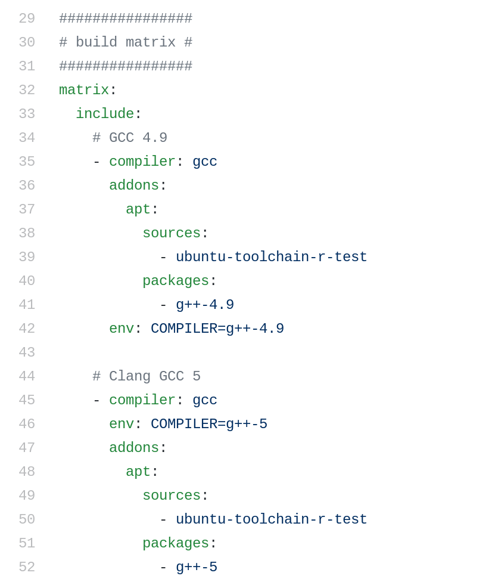
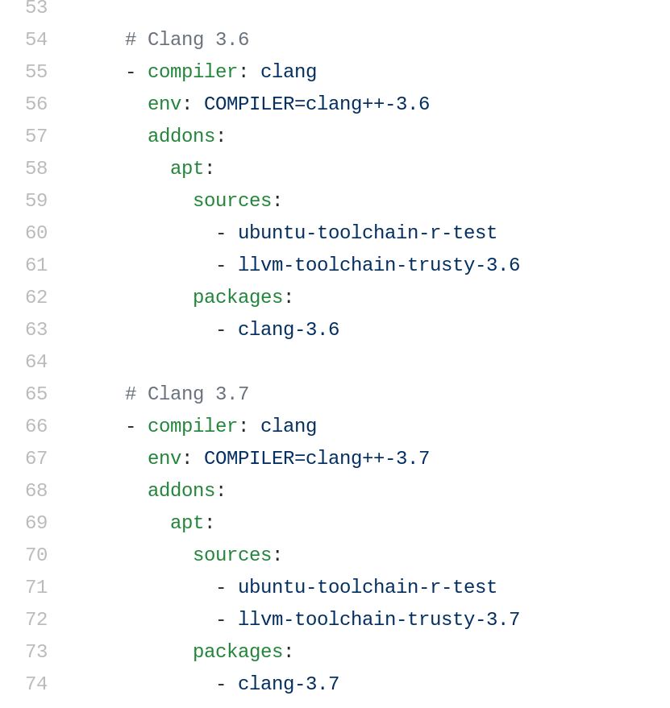

Our journey towards CI and HPC
TravisCI, CircleCI, Jenkins and containers
Jeffrey Salmond js947@cam.ac.uk,
Krishna Kumar kks32@cam.ac.uk,
University of Cambridge


Imperial College London
10 November 2017.
Overview
- Who we are
- Why CI and what do we want to acheive
- How (Test frameworks, Travis, Jenkins)
- How - Containers (Docker, Singularity)
Cambridge-Berkeley computational geomechanics
- Lattice-Boltzmann + Discrete Element Method
- Finite Element Method - Thermo-Hydro Mechanical Coupling
- Material Point Method
- Lattice Element Method

Research Computing @Cambridge
- Cambridge Service for Data-Driven Discovery (CSD3)
- Wilkes-2
360 NVidia P100 GPUs - PETA4
24576 cores Intel Skylake +
342 nodes Intel Xeon Phi (Knights Landing) - Openstack private cloud infrastructure
- Wilkes-2
Research Software Engineering @Cambridge
- Partner with researchers at Cambridge and other Universities
- Help researchers make better use of our compute resources
- Spread information about best practices
"software carpentry" "reproducible research"

Git hosting

GitLab has integrated CI!
Repositories are auto-mirrored between GitHub and GitLab
Issues / PRs are not synced after first mirror
What do we want to test with Continous Integration?
- Builds: Multiple compilers and optimisations
- Unit testing
- Benchmarks
- Static analysis
- Coverage analysis
- Formatting - clangformat
- Documentation
- Continous delivery - Deployments


Unit testing
- Test every function
- Test for all possible values
- C++ unit testing frameworks:
- Catch
- Google mock test
- Boost unit test
All tests passed (36 assertions in 3 test cases)


TravisCI: Build matrix for different compilers


Travis allows for Caching repos and directories
Installing multiple versions of libraries is complicated!
Challenges of running CI on HPC
- Job schedulers
Docker containers
- Automates the deployment of applications by packaging an application with all of its dependencies into software containers.
- Docker containers wrap up a piece of software in a complete filesystem that contains everything it needs to run: code, runtime, system tools, system libraries – anything you can install on a server.
- This guarantees that it will always run the same - Research reproducability

Challenges of running Docker on HPC environments
- Permissions on multi-user unix
- Permissions on shared file systems
Singularity containers
- Compatible with (many) docker images
- Allows access to external filesystems

Future HPCS and Big-Data systems
- Opensource development
- Modular code development
- HDF5
- In memory databases
- Apache Spark - MapReduce
- Version control
- Unit testing
- Continous integration and deployment
- Docker container - Kubernetes

Thank you!!
Krishna Kumar, kks32@cam.ac.uk,
Jeffrey Salmond js947@cam.ac.uk